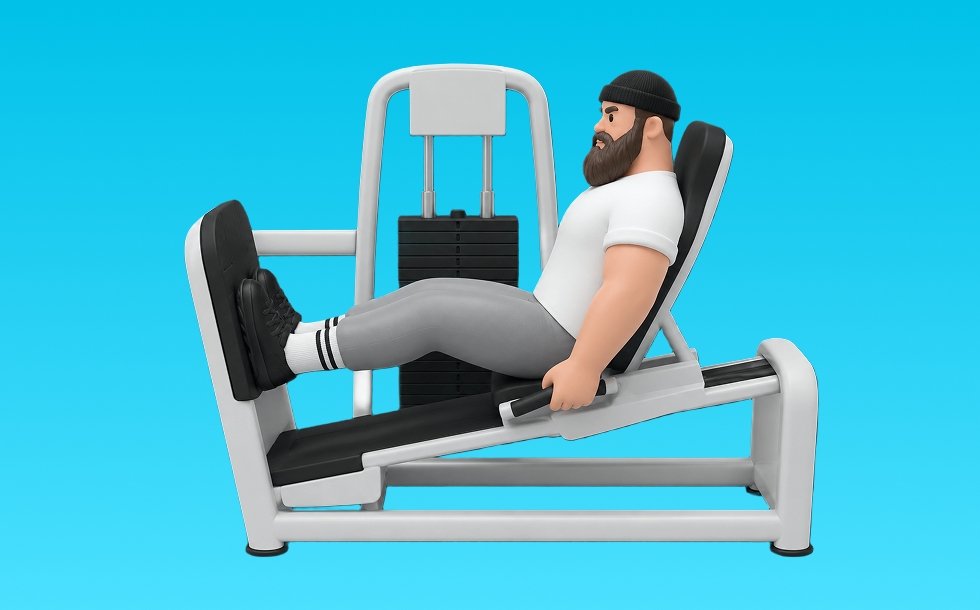

レッグプレス

レッグプレスとは、マシンを使って「押す」動作で脚（大腿四頭筋、臀筋）＋体幹を鍛える種目です。軌道が安定して狙った部位に効かせやすいのが特徴で、反動を抑えてコントロールしながら反復します。下半身の筋力・筋量アップが期待できます。
- 対象部位
- 脚
- 器具
- マシン
- 記録形式
- 重量・回数
- 別名
- 45度レッグプレス
YouTube動画
-
【ボディメイクチャンピオン指導】レッグプレスの効果が出るやり方＆応用！フォームまで徹底攻略！ 5分
-
レッグプレスのフォーム解説！膝・腰に負担をかけないフォームはコレだ！
-
レッグプレスで超美尻！お尻だけにピンポイントで効かせるテクニックがヤバすぎた
-
【間違いだらけの筋トレ】世界チャンプがレッグプレスを徹底解説！！
-
＜脚・お尻＞レッグプレス：基本編 【筋トレマシンの使い方】
-
筋トレ初心者が最初に覚えるべき脚トレのマシン使い方解説【エニタイムフィットネス】
-
レッグプレス基礎編使い方
-
【ジム初心者】知らないと損する⁉︎レッグプレスマシンの使い方【筋トレ】
-
【下半身引き締めに最適】レッグプレスの正しい使い方や筋肉効果の説明
-
【初心者向け】ジムでオススメのマシントレーニング｜下半身【3種目】
-
筋トレ多すぎて何やればいいか分からん初心者、集まれ
-
レッグプレスもも裏お尻を鍛えるために気をつけたいつま先と足の位置
-
筋トレ初心者は絶対レッグプレス・エクステンションやるべき３つの理由
-
【筋トレ】スクワットとレッグプレスの違いを解剖学的視点を交えて。
-
【45度レッグプレス】を使いこなそう！！
-
レッグプレスの注意点とは？ハックスクワットとどう使い分ける？ 【BASE GYM24セミナー/新・バズーカ岡田チャンネル】 #バズーカ岡田
-
【これ観れば全て解決】SGIRの脚トレ５種目。実演＆各種ポイント付き
-
初めてジムに行く方はこれを見てください【初心者必見】
-
【レッグプレス】効果〜マシンの正しい使い方を部位別に！重量設定についても！
-
【重さよりこれが大事】レッグプレスで脚を太くする！一番おすすめのやり方を徹底解説！
-
【9割が知らない基本!?】足の位置で激変！元ボディビル日本王者のレッグプレスの極意。
-
【初心者向け】ジムでの全身引き締めトレーニング！
-
【正月太り解消②】ジム初心者でも挑戦しやすい「レッグプレス」で一緒にヒップアップ！
-
【脚トレ】レッグプレスのマシンを使い方から完全解説【佐野市の24時間ジム：AEGYM】
-
正しくないと勿体無い！レッグプレスのよくある間違い５選【山岸秀匡/ビッグヒデ/切り抜き】
YouTubeショート
-
【レッグプレスマシン解説】これ見るだけでフォーム攻略 #ダイエット #トレーニング #むくみ改善 #下半身トレーニング #脚痩せ
-
ジュラシック木澤が45度レッグプレスに対して思ってる子事
-
脚トレフル解説
-
持田選手にもも裏に効くレッグプレスについてレクチャーしていてもらいました！次はどの種目の解説をやってほしいかコメントしてね！#筋トレ #volix #トレーニング #ちょこっと惜しい
-
レッグプレスの使い方
-
「FITEASY」マシンの使い方06 シーテッドレッグプレス(足)
-
レッグプレスは3分の2しか押さない
-
レッグプレス300kg#shorts#筋トレ
-
スクワットの正しいやり方【筋トレ】
-
レッグエクステンションをより効果的にする3つのテクニック #筋トレ #フィットネス
-
スクワット200キロまで伸ばしたチキンレッグの脚トレ。#ペックニキ #筋トレ男子 #fitnessmotivation #gymmotivation
-
マシンの王道！レッグプレスの使い方動画公開中！ #Shorts #脚トレ #ジムトレ
-
ベンチプレスの正しいやり方を紹介 #筋トレ #フィットネス
-
スクワット苦手な人のためのレッグプレス解説動画#筋トレ #脚トレ #スクワット #レッグプレス #shorts
-
圧倒的な脚を作る！ハックスクワットのフォーム解説#shorts
-
【初心者必見】前もも強化！レッグエクステンションのポイント紹介 #筋トレ #脚トレ #レッグエクステンション
-
ダイエット 脚やせ① シーテッドレッグプレス
-
「FITEASY」マシンの使い方04 レッグエクステンション(太もも)
-
カーフレイズ(レッグプレス)むくみ改善･ランニングや登山にも効果的】【糸井トレーナー】
-
正しいショルダープレス4つのポイント #筋トレ
-
【万代店】シーテッドレッグプレス 使い方動画
-
初心者向け🔰チェストプレスのワンポイントアドバイス！ #筋トレ
動作方法
- 足幅を決め、体幹を固める
- 股関節と膝を同時に曲げて下ろす
- 足裏全体で床を押して立ち上がる
動作ポイント
- 膝とつま先の向きをそろえる
- 胸を落としすぎない
- かかとを浮かせない
ワンポイントアドバイス
- ウォームアップで股関節と足首を動かす
- 高重量の日はセーフティ設定を確認する
目的別回数設定
目的や体力に応じた一般的な目安です。無理のない範囲で調整してください。
- 筋力アップ
- 1〜5回
- 筋肥大
- 6〜12回
- 持久力アップ
- 13〜20回
YouTube動画について
動画はYouTubeの公開情報をもとに表示しています。内容は投稿者によるもので、Biggrによる監修ではありません。
アプリを入手
筋トレやトレーニングの記録はBiggrにお任せください。今すぐ無料で使い始められます。